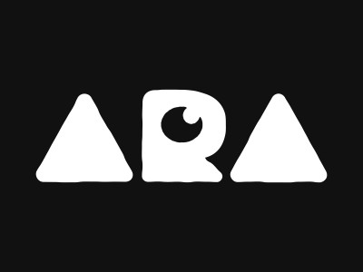
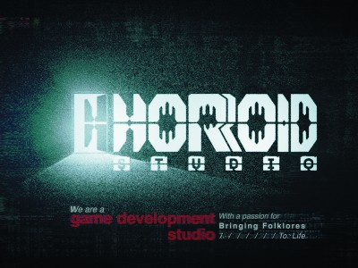

Welcome to Suthseg! AIRSHIP: KINGDOMS ADRIFT is a single player game with a hyper-rich lore and narrative. As the newly commissioned airship captain, forge a mercantile empire across the archipelago, until the great powers of Europa turn their attention toward it. Build up a fleet, chart trade routes, establish industries, and explore the frontier at your airship's helm!
Judges' Comments
It is exciting to see the content that every boy seems to long for: strengthening a ship and flying through the air.
We, a team of seasoned game industry veterans, are on a mission to introduce the first-ever Skyship battle and trading simulation, set in a lore-rich alternate fantasy world.
CINEMA is a first-person adventure inspired by the aesthetic of old silent films and noir thrillers. Players dive into a richly atmospheric world where they control time, moving back and forth at will. By manipulating time, they explore different scenarios, uncover secrets, and create new timelines with unique outcomes and twists.
Judges' Comments
Experimental and artistic game.
CINEMA is a first-person adventure inspired by the aesthetic of old silent films and noir thriller movies, where players wield control over time going back an forward and create new timelines.
A dark odyssey of wired energy, a stark and striking vignette of rust belt noir, a long late night road trip north through the long highways, barren towns, and jittering insect seas of the propulsive compulsive impulse.
Judges' Comments
Dark and psychedelic driving game. I'm not sure what it's about, but the art is very unique.
A hallucinatory bender of a late night road trip sketched in nervous lines of arcade action and exploration.
This is a mystery where nobody dies.
This is a cinematic mystery adventure in which Nekko, a rookie detective, and partner Zikenbo investigate a case with "the ability to see too much".
Find the contradiction between the lies the suspect's mouth tells and the truth his eyes tell!
Judges' Comments
The content is unique in its ability to advance through the use of unique capabilities.

I am developing this by myself while working as a UI designer/character modeler at a Japanese game company. I put all the things I like , such as "daily life mystery" and "cartoon style characters.
When a black sphere appears on Earth, countless people become trapped in endless dreams.
The protagonist's wife is among them, compelling him to venture into the dangerous sphere to save her.
'Dream in the Shell' is a story adventure game that explores surreal worlds where dreams, memories, and the subconscious blend. Explore mysterious spaces through unique interactions and uncover the truth.
Judges' Comments
The quality is not indie.
ROOMTONE Games is an indie game studio based in Seoul, South Korea. We create immersive game experiences through beautiful artwork and cinematic storytelling.
A fragile little egg on a big platforming adventure! Carefully manage your falls and your superpowered jumps through the weird, cold, and sometimes cute world of this puzzle platformer!
Judges' Comments
The game design is similar to Spelunker, where you die if you fall from a high place or get hit by an impact because you are an egg. This is an egg action puzzle game. It is not flashy, but it is easy to understand.
May has been developing Fowl Damage mostly solo over the last 6 years. She is super excited to show it to everyone at TGS!
A girl visited your home, who you don't know but she identified herself as your girlfriend. She seems a little bit Menhera, but she knows too much to be just a stalker. This is a Kawaii Future Mystery, you will answer by free input for branching story.
Judges' Comments
I'm interested to see how many variations of conversations there are as a game using AI.
The current release is available only in Japanese. An English version will be available in the near future!
The atmosphere of the dots and the occasional animation are well balanced. The only thing that bothers me is that the illustration on the title screen has a different style from the main story.
Light Odyssey is an action packed Boss-Rush Action where you explore the ruins of an ancient fallen civilization, challenge the Colossus, and fight to restore light to the world.
Loco Limbo is a fun indie game where you control a Character who can Detach and use their Limbs. Stuck on a weird island after military experiments, you solve puzzles and survive using your unique limb abilities.
Can you make it off this crazy island in one piece?
Judges' Comments
I can't imagine what it's about, but I'd like to play with it.
Hey, I'm Loco Limbo, waking up on an island after some crazy military experiments. Now, I can dismember myself and stay alive! Can I make it off this crazy island in one piece?
Marron's Day is a silly retro adventure game where you're a bunny! Explore the town, run errands for your animal friends, and don't let anyone catch you swiping the carrots from the garden (again)!
Judges' Comments
Plans to launch on GameBoy are also hot.
Hi! I'm npckc. I make games with my composer partner sdhizumi. I hope you like our cute retro game.
The artistry of this picture book-like game is eye-catching, but the disturbing atmosphere may appeal to different tastes. A game with expressive and experimental attempts as a game.
An adventure game in which the player solves a difficult case by relying on information from SNS. This is a much-talked-about game with an excellent storyline.
Unleash a forgotten terror. Jinns, once architects of Solomon's kingdom, now imprisoned in an otherworldly realm, seek vengeance in Ominous Recall. This first-person survival horror follows Stephen as their whispers twist his memories, forcing him to confront a haunting past.
Judges' Comments
A horror story that shows that it was created with a great deal of care and attention.

Horroid is an independent game development studio that crafts psychological and survival horror video games inspired by horror folktales from around the world.
Primordials Legends: Hollow Hero tells the tale of Brunt, an anthropomorphic combat wombat on her first adventure in the fantasy world, Eridal. Embark on this epic 3rd person action-filled adventure, uncover how this world came to be, and meet new legends that will help shape the future of Eridal!
Judges' Comments
Action game with next-generation game-like graphics
Toybox Games Studios, an indie developer in Melbourne, Australia, is a team of ambitious creatives delivering high-quality, gameplay-driven experiences.
A Comic-Book Styled Journey - venture into the Underwest, the world of the dead from all mythologies of the world, presented in a gorgeous style, inspired by Samurai Jack and Primal.
A Striking Side-Scrolling Shooter - run and gun across 7 beautiful locations, each with its unique gameplay elements; and challenge the Boss at the end of the Realm.
Judges' Comments
The action game gimmick looks interesting. The action is well presented and keeps you on your toes.
Rose and Locket offers a unique twist on the sidescrolling genre, surpising the player with its gorgeous visuals, unique twists on the gameplay formula and a compelling story of revenge and loss.
Tampopo is a heartfelt RPG adventure with unique physics based combat. It is set in a strange world with strange characters. It is a lighthearted game that will make you laugh but it has a hidden darkness to itself which will gently unfold until it wraps all the way around you. It is meant to be played alone, but if someone you love is watching you play, that might be even better.
Judges' Comments
The visuals are reminiscent of Undertale, but the story looks interesting. The distinctive look and feel caught my eye!
I Am making this game all by myself. This project means everything to me, it represents who I am as an artist and I can't wait to have you play it. -Calman
The Crazy Hyper-Dungeon Chronicles is a pixel-art dungeon-crawler RPG featuring roguelite elements. Players will explore intricate dungeons, fight enemies, and solve puzzles. The combat system offers a unique blend of turn-based tactics and arcade dynamism. Every run of the game presents unique challenges, strategy, and combat, offering a fresh experience for both veterans and beginners.
Judges' Comments
The pictures may not be to everyone's liking, but the game looks fun to play.
Plunge into the heart of adventure with our 2D dungeon crawler where turn-based action meets arcade excitement in a top-down perspective in stunning pixel art!
Embark on a royal journey as King Romus Toras. Lead the Golden Kingdom to a new era, reclaim lost territories, and engage with noble houses. Explore South Merkopa, manage new resources, and navigate geopolitics. Forge alliances or make enemies. Sign Royal Decrees to develop Rizia and experience conflict. Engage in rich character interactions and intricate family dynamics. How will you reign?
Judges' Comments
War game that could be fun like a board game.
Founded in Berlin in 2019, Torpor Games creates thought-provoking entertainment that broadens horizons, shifts perspectives, and challenges morality through engaging and provocative experiences.
Relive the old-school internet in 'VIDEOVERSE' – A decision-based narrative adventure inspired by MSN Messenger and Miiverse. Play as Emmett – a young video game fan and aspiring artist – and help a huge cast of characters in the troubled gaming network! Browse the communities, unlock side stories, draw pixel art, personalise your home page, report internet trolls, make friends and more!
Judges' Comments
This work allows you to experience the old internet community. Interesting to experience the early days of the Internet.
Kinmoku is an award-winning, independent game developer creating emotional, narrative-driven experiences. They created the popular visual novel ‘One Night Stand’ and recently released the critically acclaimed ‘VIDEOVERSE’.
Optillusion Games 是一家创新的游戏开发工作室，将创意与技术进行结合，以打造沉浸式的游戏体验。我们多元化的团队致力于打破常规，为全球玩家带来独特而难忘的冒险旅程。
We use cookies to collect access data for purposes such as providing more convenient services, analyzing website usage and delivering advertisements. For details, please refer to the "About our data usage" section from where you may also opt out.


Judges' Comments
It is exciting to see the content that every boy seems to long for: strengthening a ship and flying through the air.